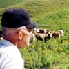

Recibe tus informes por email
Olvídate de descargar tus trabajos manualmente. Los informes llegarán a tu buzón de correo electrónico al final del día.
Visualiza tus trabajos en el ordenador
Podrás ver el trayecto realizado, el tiempo invertido, el área tratada, las distancias medidas, etc...
Guarda un histórico de trabajos
Podrás acceder a ellos desde cualquier parte y en cualquier momento. No volverás a perder un informe.
“Ya no puedo trabajar sin él.”
— Marcos, Vega de los arboles —

“Desde que lo uso tengo mas tiempo para mi”
— Carlos, Alaejos —
 “Sencillo y práctico, para qué mas”
“Sencillo y práctico, para qué mas”
— Tomás, Villanueva —
Qué incluye y cómo funciona
Con tu kit Agroguía recibirás una suscripción ilimitada a la versión básica del servicio de trabajos on-line.
Existen otros paquetes mas avanzados que te darán mas funcionalidad y posibilidaes, y seguro, te facilitarán el trabajo.
Si tienes alguna pregunta o necesitas mas información, no dudes en contactar con nosotros.
- PAQUETE BÁSICO ver ejemplo
- Informes por email
- Análisis de área remontada
- Historial de trabajos
- Generación de facturas
- 0€/AÑO Incluido con Agroguía
- PAQUETE AVANZADO ver ejemplo
- Informes por email
- Análisis de área remontada
- Historial de trabajos
- Generación de facturas
- PREGÚNTANOS